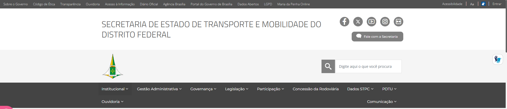
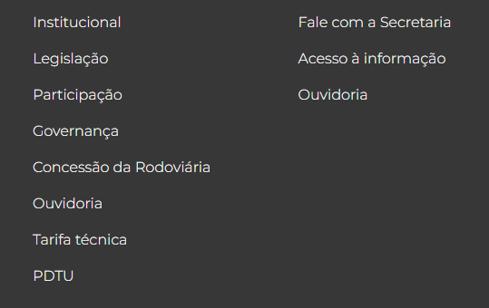
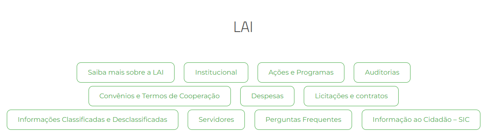
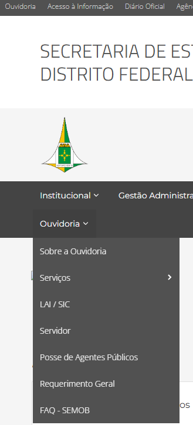
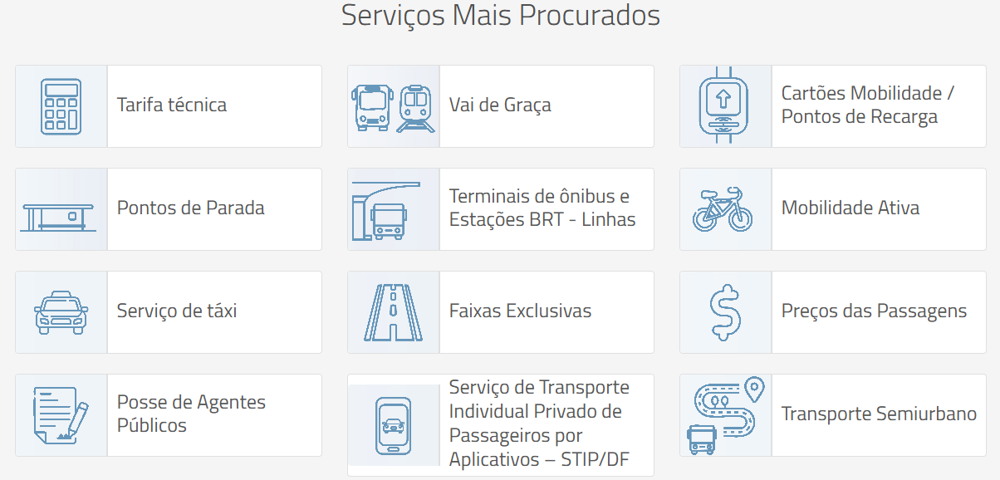
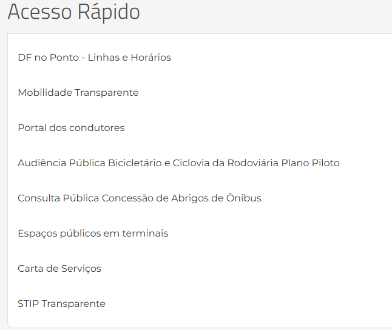
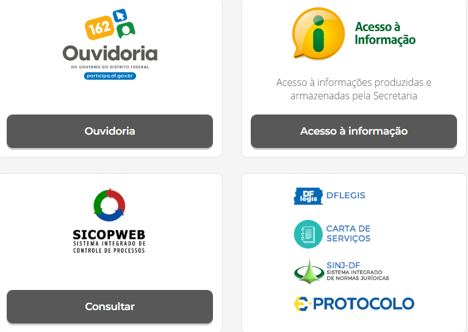
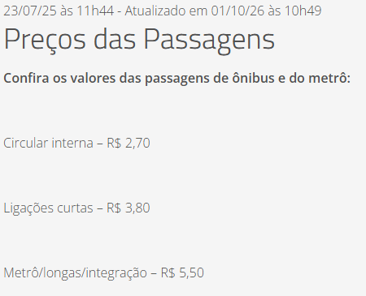
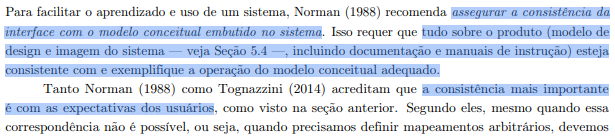
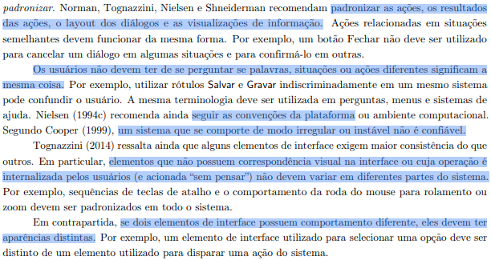

Consistência e Padronização no site da SEMOB-DF¶
Histórico de Versão e Contribuição¶
| Data | Versão | Descrição | Autor(es) | Revisor(es) |
|---|---|---|---|---|
| 05/10/2026 | 1.0 | Criação do documento de consistência e padronização do SEMOB-DF. | Igor Dantas | Gabriel Melo |
Site analisado: https://www.semob.df.gov.br/ (Secretaria de Estado de Transporte e Mobilidade do Distrito Federal)
Princípio: 10.2.4 Consistência e Padronização
Referência: Barbosa, S. D. J. et al. (2021). Interação Humano-Computador e Experiência do Usuário, Cap. 10: Princípios e Diretrizes para o Design de IHC, pp. 241–242.
Data da inspeção: 05/10/2026, em navegador desktop (Google Chrome)
Autor do artefato: Igor Dantas
1. O princípio segundo o livro¶
O capítulo 10 reúne as recomendações de Norman (1988), Tognazzini (2014), Nielsen (1994) e Shneiderman (1998) sobre consistência, cuja referência está evidenciada nas imagens 1 e 2. As ideias usadas como critério nesta análise são:
- Consistência com o modelo conceitual. Tudo no produto deve estar de acordo com o modelo conceitual do sistema e exemplificá-lo: a interface, a documentação e a imagem do sistema (Norman).
- Consistência com as expectativas do usuário. É a mais importante. Quando não há como corresponder a elas, deve-se ao menos padronizar (Norman, Tognazzini).
- Padronizar ações, resultados, layout e visualizações. "Ações relacionadas em situações semelhantes devem funcionar da mesma forma." O exemplo do livro é um botão Fechar que cancela o diálogo em umas telas e o confirma em outras.
- Uma palavra para cada coisa. "Os usuários não devem ter de se perguntar se palavras, situações ou ações diferentes significam a mesma coisa." O exemplo do livro é usar Salvar e Gravar indiscriminadamente no mesmo sistema. A mesma terminologia deve aparecer em menus, perguntas e ajuda.
- Seguir as convenções da plataforma (Nielsen).
- Ter comportamento regular. "Um sistema que se comporte de modo irregular ou instável não é confiável" (Cooper).
- Padronizar o que é feito "sem pensar". Comportamentos internalizados pelo usuário não podem variar entre partes do sistema (Tognazzini).
- Aparências diferentes para comportamentos diferentes. Se dois elementos funcionam de modo diferente, devem ter aparências distintas (Tognazzini).
2. Como a inspeção foi feita¶
- Inspeção da página inicial e das páginas internas Preços das Passagens e Ouvidoria.
- Levantamento de todos os links da página inicial a partir do código HTML: rótulo, destino e se o link abre ou não em nova aba.
- Capturas de tela para mostrar onde estão os erros.
- Teste de resolução DNS dos dois endereços do site,
www.semob.df.gov.bresemob.df.gov.br, usando o DNS público 8.8.8.8.
Escala de gravidade usada: Alta (impede ou atrapalha muito a tarefa), Média (confunde ou atrasa) e Baixa (problema cosmético).
3. Pontos positivos¶
A seguir, na tabela 1, estão presentes os pontos positivos observados.
Tabela 1 - Pontos positivos
| # | Observação | Relação com o princípio |
|---|---|---|
| P1 | O site usa o mesmo tema visual dos demais sites de secretarias do GDF: barra superior do governo, cabeçalho, menu, rodapé, botão de VLibras e controles de acessibilidade. | Segue as convenções da plataforma: quem já usou o site de outra secretaria do GDF reconhece a estrutura. |
| P2 | Cabeçalho, menu principal e rodapé são idênticos em todas as páginas visitadas. | Padronização do layout. |
| P3 | As páginas internas seguem o mesmo modelo: trilha de navegação (breadcrumb), data de publicação e de atualização, título e conteúdo. | Padronização do layout dos "diálogos". |
| P4 | No menu principal, todos os itens com submenu têm a seta ⌄. Concessão da Rodoviária, que é um link direto, não tem a seta. |
Aparências diferentes para comportamentos diferentes, como recomenda Tognazzini. |
| P5 | Os cartões de Serviços Mais Procurados seguem um padrão único: ícone de linha azul à esquerda e rótulo à direita. | Padronização visual dentro de um mesmo bloco. |
A seguir, na imagem 3, é possível visualizar a barra superior e o menu inicial do site

Imagem 03: barra do GDF, cabeçalho e menu principal, padrão comum aos sites das secretarias.4. Problemas encontrados¶
Resumo¶
A tabela 2 a seguir apresenta a síntese dos problemas de consistência e padronização encontrados no site:
Tabela 2 - síntese dos problemas encontrados
| # | Problema | Diretriz violada | Gravidade |
|---|---|---|---|
| C1 | O mesmo rótulo leva a destinos diferentes ("Ouvidoria", "Governança") | Ações semelhantes devem funcionar da mesma forma (exemplo do botão Fechar) | Alta |
| C2 | Nomes diferentes para a mesma coisa (LAI/SIC, FAQ, Bilhetagem etc.) | Uma palavra para cada coisa (exemplo Salvar × Gravar) | Alta |
| C3 | Dois endereços para o mesmo site; o endereço sem "www" não funciona | Comportamento regular e confiável (Cooper) | Alta |
| C4 | Rótulos que não correspondem ao destino ("Gratuidades", "Vai de Graça", menu "Ouvidoria") | Consistência com o modelo conceitual e com as expectativas | Média |
| C5 | Links abrem ora na mesma aba, ora em nova aba, sem critério | Padronizar comportamentos internalizados (Tognazzini) | Média |
| C6 | Pelo menos seis estilos visuais para o mesmo tipo de elemento (link de navegação) | Padronizar layout e visualizações | Média |
| C7 | Elementos com comportamento diferente e aparência igual (texto com cor de link; duas caixas de busca) | Aparências distintas para comportamentos distintos | Média |
| C8 | Grafia, maiúsculas e separadores sem padrão nos rótulos | Mesma terminologia em todo o sistema | Baixa |
C1. O mesmo rótulo leva a destinos diferentes (gravidade alta)¶
O rótulo "Ouvidoria" aparece cinco vezes na página inicial, com destinos diferentes. A tabela 3 a seguir indica os locais onde esses rótulos foram encontrados e para onde eles levam.
Tabela 3 - Links "Ouvidoria" na página inicial
| Onde aparece | Para onde leva | Abre em |
|---|---|---|
| Barra superior do GDF | ouvidoria.df.gov.br (site externo do GDF) |
nova aba |
| Menu principal | /atendimento-1: submenu que mistura Ouvidoria, Serviços, Servidor e FAQ |
mesma aba |
| Cartão "Ouvidoria" no corpo da página | /ouvidoria (página interna) |
mesma aba |
| Rodapé, 1ª coluna | /atendimento-1 |
mesma aba |
| Rodapé, 2ª coluna | participa.df.gov.br (outro site externo) |
mesma aba |
O mesmo ocorre com "Governança": no menu principal, o item leva a /governança1; no rodapé, o mesmo rótulo leva a /gestao-administrativa-1.
Por que é um problema: é o caso do botão Fechar descrito no livro. O mesmo signo produz efeitos diferentes conforme o lugar em que é clicado. O usuário não consegue formar uma expectativa estável sobre o que "Ouvidoria" faz. Ele pode cair num site externo, num submenu ou numa página interna.
Recomendação: definir um único destino para "Ouvidoria", de preferência a página interna /ouvidoria, que já explica o serviço e aponta para o Participa DF. Quando o destino for de fato outro, usar outro rótulo, por exemplo "Registrar manifestação no Participa DF". Corrigir o link "Governança" do rodapé.
A seguir, na imagem 4, é possível visualizar o rodapé da página inicial com dois rótulos "Ouvidoria"

Imagem 04: no rodapé, "Ouvidoria" aparece em duas colunas, e cada link leva a um destino diferente.C2. Nomes diferentes para a mesma coisa (gravidade alta)¶
A tabela 4 a seguir apresenta alguns termos encontrados no site que parecem ou deveriam ser a mesma coisa.
Tabela 4 - Nomes diferentes para a mesma coisa
| Conceito | Nomes encontrados no site |
|---|---|
| Acesso à informação (LAI/SIC) | "Acesso à Informação" (barra GDF, cartão e rodapé), "LAI / SIC" (menu Ouvidoria), "LAI" (título da seção), "Saiba mais sobre a LAI", "Informação ao Cidadão – SIC" (botão) e "Serviço de Informação ao Cidadão - SIC" (menu lateral da Ouvidoria). São pelo menos seis nomes, que levam a quatro destinos diferentes. |
| Perguntas frequentes | "FAQ - SEMOB" (menu) e "Perguntas Frequentes" (seção LAI), que levam à mesma página, sendo que na segunda opção a página sequer carrega. |
| Bilhete/cartão do transporte | Rótulo "Cartões Mobilidade / Pontos de Recarga"; texto alternativo do ícone: "Bilhetagem"; endereço: /bilhete-unico. |
| Bicicletas | Rótulo "Mobilidade Ativa"; texto alternativo do ícone: "Ciclomobilidade"; endereço: /bicicletas-compartilhadas. |
| Página da Ouvidoria | Na trilha de navegação: "Sobre a Ouvidoria"; no título: "Ouvidoria"; no menu lateral: "A Ouvidoria da SEMOB" (imagem 09). |
| Consulta × Audiência pública | O botão "Consulta Pública Concessão de Abrigos de Ônibus" leva a /audiência-pública-concessão-de-abrigos.... |
| Rodoviária | "Concessão da Rodoviária" (menu) e "Concessão da Rodoviária do Plano Piloto" (seção PPP). |
| Dados do sistema de transporte | "Dados STPC" (menu) e "Dados do STPC/DF" (submenu e seção Transparência). |
| Contratos | "Licitações e Chamamentos" e "Contratos e Convênios" (menu) versus "Licitações e contratos" e "Convênios e Termos de Cooperação" (seção LAI), com destinos diferentes. |
Por que é um problema: o livro diz que o usuário não deve ter de se perguntar se palavras diferentes significam a mesma coisa. No caso da LAI, o cidadão não sabe se "SIC", "LAI" e "Acesso à informação" são serviços distintos ou o mesmo serviço. Como os destinos também variam, a dúvida é legítima. O livro também pede a mesma terminologia "em perguntas, menus e sistemas de ajuda", e aqui o menu, os botões e o menu lateral usam termos diferentes.
Recomendação: criar um vocabulário controlado, isto é, uma lista de termos oficiais do site. Exemplo: "Acesso à Informação (LAI)" para o tema e "Pedir informação (SIC)" para a ação. Aplicar esse vocabulário em menus, botões, títulos, trilhas de navegação e textos alternativos de imagens.
A seguir, as imagens 5 e 6 mostram os botões de "FAQ-SEMOB" (menu ouvidoria) e "Perguntas Frequentes" (seção LAI) que levam ao mesmo endereço. -

Imagem 05: "Perguntas Frequentes" (que no menu se chama "FAQ - SEMOB"). -
Imagem 06: "FAQ - SEMOB".C3. Dois endereços para o mesmo site, e um deles não funciona (gravidade alta)¶
O site é servido em www.semob.df.gov.br, mas 28 referências no código da página inicial apontam para semob.df.gov.br, sem "www". Esse endereço não tem registro DNS: a consulta ao DNS público 8.8.8.8 em 05/10/2026 não retornou endereço IP, e o navegador exibiu ERR_NAME_NOT_RESOLVED. Os elementos afetados são:
- 10 dos 12 cartões de "Serviços Mais Procurados", entre eles Preços das Passagens, Pontos de Parada, Terminais de ônibus e Estações BRT, Serviço de táxi, Cartões Mobilidade e Tarifa técnica. Só Posse de Agentes Públicos e Transporte Semiurbano funcionam;
- todos os 11 botões da seção "LAI";
- STIP Transparente, no Acesso Rápido;
- o item Organograma do menu Institucional;
- as imagens do banner principal e o fundo da seção PPP (ver o documento sobre Visibilidade e Reconhecimento).
Os mesmos conteúdos acessados pelo menu, com "www", funcionam. Por exemplo, www.semob.df.gov.br/precos-das-passagens abre normalmente (imagem 08).
Por que é um problema: é a irregularidade de que Cooper fala: "um sistema que se comporte de modo irregular ou instável não é confiável". Para o usuário, o mesmo conteúdo funciona por um caminho (menu) e falha por outro (cartão da página inicial). Ele não tem como saber por quê, e passa a desconfiar do site inteiro.
Recomendação: padronizar todos os links como relativos (/precos-das-passagens) ou com o domínio canônico www. Configurar também o DNS para que semob.df.gov.br redirecione para www.semob.df.gov.br.
A seguir, na imagem 7, é possível visualizar a seção de "serviços mais procurados". -

Imagem 07: cartões visualmente padronizados (ponto positivo P5). Mesmo assim, 10 dos 12 apontam para o endereço sem "www", que não abre.C4. Rótulos que não correspondem ao destino (gravidade média)¶
A tabela 5 a seguir apresenta os resultados dos rótulos que não correspondem aos seus respectivos destinos.
Tabela 5 - Rótulos que não correspondem ao destino
| Rótulo | Destino real | Observação |
|---|---|---|
| "Gratuidades" (seção Transparência) | /calculo-da-tarifa-tecnica-2 |
É o mesmo destino de "Tarifa técnica". O usuário que procura gratuidades cai no cálculo da tarifa. |
| "Vai de Graça" (Serviços Mais Procurados) | Uma página de resultados de busca (/busca?...q=vai+de+graça) |
Os outros 11 cartões levam a páginas de conteúdo. Este leva a uma busca salva. |
| Menu "Ouvidoria" | Submenu com Carta de Serviços, Protocolo, Processos da Jari, Inspeção Veicular, Limites do Vale-Transporte, Posse de Agentes Públicos, Requerimento Geral, FAQ | Itens que não são da Ouvidoria ficam agrupados sob esse nome. O endereço do item é /atendimento-1, o que sugere que o rótulo deveria ser "Atendimento" ou "Serviços". |
Por que é um problema: viola a consistência com o modelo conceitual (Norman). O rótulo cria no usuário uma expectativa que a página não confirma. Vale também o que o livro chama de consistência mais importante, a consistência com as expectativas do usuário.
Recomendação: criar uma página própria para "Gratuidades" e outra para "Vai de Graça". Renomear o menu "Ouvidoria" para "Atendimento e Serviços" e deixar a Ouvidoria como um item dentro dele.
A seguir, na imagem 8, é possível visualizar a página de cálculo da tarifa técnica, resultado de clicar no botão "gratuidades"
-  Imagem 08: página de cálculo da tarifa técnica.
Imagem 08: página de cálculo da tarifa técnica.
C5. Links abrem ora na mesma aba, ora em nova aba (gravidade média)¶
A seguir, na tabela 6, estão descritos os links de problemas encontrados.
Tabela 6 - Links abrem ora na mesma aba, ora em nova aba
| Situação | Comportamento |
|---|---|
| Páginas internas pelo menu (ex.: Posse de Agentes Públicos) | mesma aba |
| As mesmas páginas internas pelos cartões de Serviços Mais Procurados ou Acesso Rápido | nova aba |
| Sites externos na barra do GDF (Transparência, Diário Oficial etc.) | nova aba |
| Sites externos pelo menu (Concessão da Rodoviária, Site PDTU, Regimento Interno no SINJ) ou pelo rodapé (Participa DF) | mesma aba |
| Botão "Fale com a Secretaria" | uma instância abre em nova aba e outra na mesma aba (ambas para /fale-com-a-secretaria) |
Por que é um problema: abrir links e voltar com o botão "Voltar" é um comportamento internalizado, feito "sem pensar", que Tognazzini diz que deve ser padronizado em todo o sistema. Hoje o usuário não sabe se, ao clicar, sairá da SEMOB ou não. Quando o link abre em nova aba, o botão "Voltar" deixa de funcionar e o usuário acumula abas.
Recomendação: adotar uma regra única. Por exemplo: links internos sempre na mesma aba; links externos e documentos sempre em nova aba, com ícone indicativo (↗).
C6. Seis estilos visuais para o mesmo tipo de elemento (gravidade média)¶
Na página inicial, o mesmo tipo de elemento (um link que leva a outra página) aparece com pelo menos seis aparências, listados na tabela 7:
Tabela 7 - stilos visuais para o mesmo tipo de elemento
| Bloco | Estilo |
|---|---|
| Acesso Rápido | Lista de texto simples, sem sublinhado nem ícone |
| Serviços Mais Procurados | Cartão com ícone e rótulo |
| Parceria Público Privada – PPP | Botão com contorno branco e texto branco |
| LAI e Transparência | Botão em formato de pílula, com contorno e texto verdes |
| Ouvidoria, Acesso à informação, SICOPWEB | Botão cinza-escuro preenchido, com texto branco |
| DFLEGIS, Carta de Serviços, SINJ-DF, Protocolo | Logotipo sem botão e sem rótulo em texto |
No cabeçalho há ainda um sétimo estilo: o botão "Fale com a Secretaria", cinza, com ícone de balão.
Por que é um problema: o livro recomenda padronizar o layout dos diálogos e as visualizações de informação. Quando cada bloco tem uma linguagem visual própria, o usuário precisa reaprender, bloco a bloco, o que é clicável. A lista de Acesso Rápido, por exemplo, não parece clicável. A página também parece uma colagem de módulos independentes, e não um sistema único.
Recomendação: definir no guia de estilo do site (Seção 10.5 do livro) dois ou três componentes de navegação, por exemplo um cartão de serviço, um botão primário e um link de texto, e usar só esses em toda a página.
A seguir, nas imagens 9 e 10 é posível visualizar as seções onde aparecem "acesso rápido" e os logotipos sem botão.

Imagem 09: o "Acesso Rápido" é uma lista de texto simples, sem nenhuma pista visual de que os itens são links. Os outros blocos usam cartões e botões.
Imagem 10: botões cinza preenchidos ao lado de logotipos que funcionam como links sem rótulo de ação.C7. Comportamentos diferentes com aparências iguais (gravidade média)¶
- Texto com cor de link. Na página Preços das Passagens, os valores ("Circular interna – R$ 2,70" etc.) estão em azul-claro, a mesma cor dos links do site, mas são texto comum (
<p>sem<a>). O usuário tende a clicar e nada acontece (imagem 08). - Duas caixas de busca parecidas com escopos diferentes. "Digite aqui o que você procura", no cabeçalho, pesquisa no site da SEMOB. "Faça sua busca", no bloco Diário Oficial, pesquisa no site do DODF e abre nova aba. As duas são campos brancos com lupa, e nada indica a diferença de escopo e de comportamento.
Por que é um problema: contraria a recomendação de Tognazzini de que "se dois elementos de interface possuem comportamento diferente, eles devem ter aparências distintas".
Recomendação: usar a cor de link apenas em links. Dar à busca do DODF um rótulo explícito, como "Buscar no Diário Oficial do DF", e um botão próprio.
A imagem 11 a seguir mostra a página "Preços das passagens" -

Imagem 11: os valores das passagens estão na cor dos links, mas não são clicáveis.C8. Grafia, maiúsculas e separadores sem padrão (gravidade baixa)¶
- Maiúsculas: "Adote Um Abrigo", "Passo A Passo", "Boletim Interno normativo", "Tarifa técnica" ao lado de "Preços das Passagens", "Portal da transparência" ao lado de "Transparência", "Maria da Penha Online" e "Maria da Penha ONLINE".
- Separadores: "Resoluções – CTPC" (travessão), "Atas - CTPC" (hífen com espaços), "Cronograma Reuniões -CTPC" (hífen sem espaço depois).
- Siglas: "Processos da Jari" e "JARI" no endereço; "Dados STPC" e "Dados do STPC/DF".
Por que é um problema: isoladamente são detalhes, mas somados transmitem descuido. Também dificultam a leitura rápida dos menus, porque o olho não encontra um padrão.
Recomendação: adotar uma regra de capitalização, por exemplo só a primeira palavra e os nomes próprios em maiúscula, e um único separador. Registrar as duas regras no guia de estilo.
5. Síntese das recomendações¶
- Vocabulário controlado: um termo por conceito e um destino por termo (resolve C1, C2 e C4).
- Domínio canônico: todos os links relativos ou com
www, mais um redirecionamento no DNS (resolve C3). - Regra de abertura de links: internos na mesma aba; externos e documentos em nova aba, com ícone (resolve C5).
- Guia de estilo com poucos componentes de navegação (resolve C6 e C7).
- Regras de redação para capitalização, separadores e siglas (resolve C8).
6. Conclusão¶
A estrutura geral do site da SEMOB é consistente, porque segue o padrão visual e de navegação do GDF. É o ponto mais forte do site em relação a este princípio. A consistência falha no conteúdo: os mesmos rótulos levam a lugares diferentes e os mesmos conceitos recebem nomes diferentes. Os blocos da página inicial também usam estilos visuais e comportamentos de abertura de links diferentes entre si. O problema mais grave é técnico, mas aparece para o usuário como inconsistência: os links sem "www" fazem o mesmo conteúdo funcionar pelo menu e falhar pelos atalhos da página inicial. Essa é a irregularidade que, segundo Cooper, torna o sistema não confiável.
Fotos de Referência¶
-

Imagem 01: Referência teórica do livro-texto. -

Imagem 02: Referência teórica do livro-texto.
Referências Bibliográficas¶
- BARBOSA, S. D. J.; SILVA, B. S. da; SILVEIRA, M. S.; GASPARINI, I.; DARIN, T.; BARBOSA, G. D. J. Interação Humano-Computador e Experiência do Usuário. Autopublicação, 2021. Cap. 10, Seção 10.2.4.